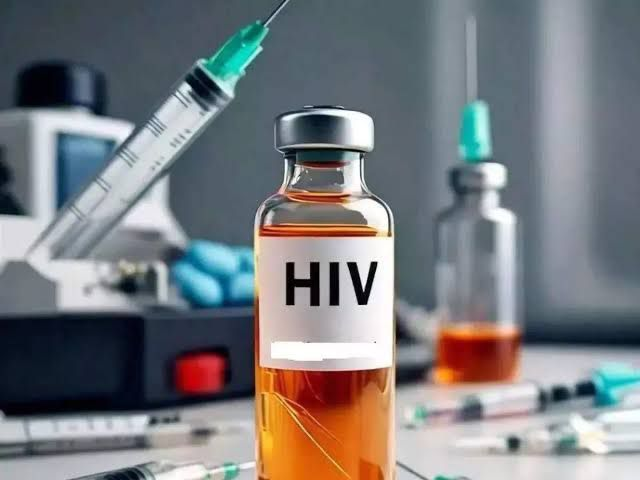
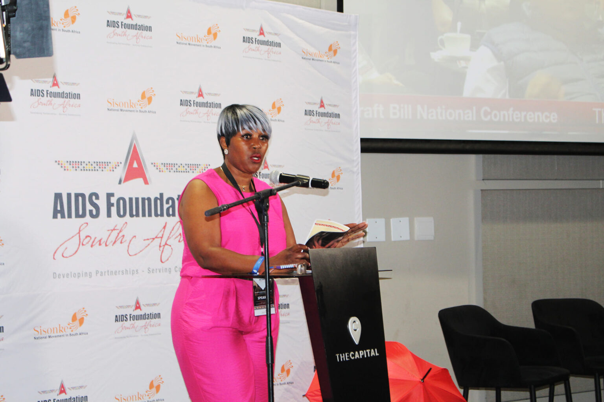

The Adolescent Youth Programme (AYP) is a comprehensive initiative designed to support young people aged 10-24 years in 14 priority areas. The program focuses on providing age-specific services to address the unique needs of adolescents and young people, including those living with HIV, disabilities, or other vulnerabilities.
The AYP's core services are built around six key activities:
Assessing individual risk factors and needs
Offering HIV testing and counseling
Providing sexual and reproductive health services
Providing education on condom use and distribution
Sharing information on HIV, TB, STIs, and gender-based violence
Creating personalized service plans
Ensuring ongoing support and guidance
In addition to the core services, the AYP offers layered services tailored to the specific needs of each individual. These services can be categorized into three main types:
Biomedical Services: Access to comprehensive healthcare, including HIV treatment and reproductive health services
Behavioral Services: Support and counseling to promote healthy behaviors and lifestyles
Structural Services: Community-based initiatives to address social norms and promote positive change
The AYP delivers services through various channels, including:
Schools
Technical and vocational training institutions
Community safe spaces
Mobile clinics
The program emphasizes collaboration with other initiatives and organizations to ensure seamless referrals and comprehensive support for young people. By working together, the AYP aims to provide holistic services that address the complex needs of adolescents and young people.
 